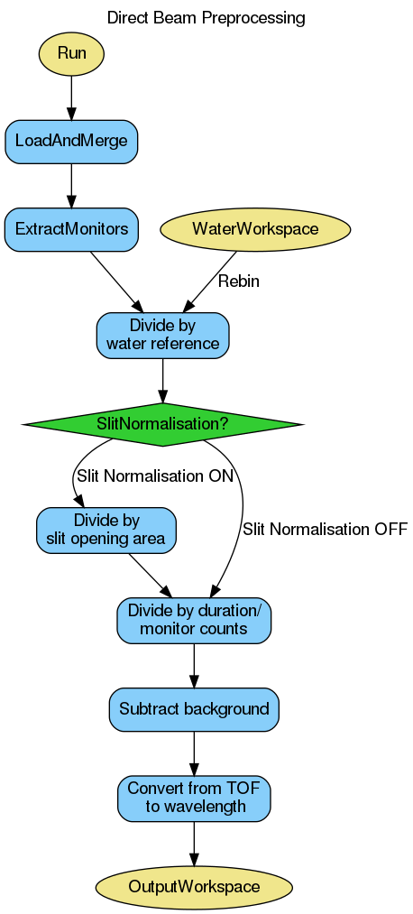

ReflectometryILLPreprocess dialog.
Table of Contents
| Name | Direction | Type | Default | Description |
|---|---|---|---|---|
| Run | Input | list of str lists | Mandatory | A list of input run numbers/files. Allowed values: [‘nxs’] |
| OutputWorkspace | Output | MatrixWorkspace | Mandatory | The preprocessed output workspace (unit wavelength), single histogram. |
| Measurement | Input | string | DirectBeam | Whether to process as direct or reflected beam. Allowed values: [‘DirectBeam’, ‘ReflectedBeam’] |
| AngleOption | Input | string | SampleAngle | Allowed values: [‘SampleAngle’, ‘DetectorAngle’, ‘UserAngle’] |
| BraggAngle | Input | number | -1 | The bragg angle for reflected beam [Degree], used if angle option is UserAngle. |
| DirectBeamDetectorAngle | Input | number | -1 | The detector angle value [Degree] for the corresponding direct beam, used if angle option is DetectorAngle |
| DirectBeamForegroundCentre | Input | number | -1 | Fractional pixel index for the direct beam, used if angle option is DetectorAngle. |
| SubalgorithmLogging | Input | string | Logging OFF | Enable or disable child algorithm logging. Allowed values: [‘Logging OFF’, ‘Logging ON’] |
| Cleanup | Input | string | Cleanup ON | Enable or disable intermediate workspace cleanup. Allowed values: [‘Cleanup ON’, ‘Cleanup OFF’] |
| WaterWorkspace | Input | MatrixWorkspace | A (water) calibration workspace (unit TOF). | |
| SlitNormalisation | Input | string | Slit Normalisation AUTO | Enable or disable slit normalisation. Allowed values: [‘Slit Normalisation AUTO’, ‘Slit Normalisation OFF’, ‘Slit Normalisation ON’] |
| FluxNormalisation | Input | string | Normalise To Time | Neutron flux normalisation method. Allowed values: [‘Normalise To Time’, ‘Normalise To Monitor’, ‘Normalisation OFF’] |
| ForegroundHalfWidth | Input | long list | Number of foreground pixels at lower and higher angles from the centre pixel. | |
| FlatBackground | Input | string | Background Average | Flat background calculation method for background subtraction. Allowed values: [‘Background Average’, ‘Background Constant Fit’, ‘Background Linear Fit’, ‘Background OFF’] |
| LowAngleBkgOffset | Input | number | 7 | Distance of flat background region towards smaller detector angles from the foreground centre, in pixels. |
| LowAngleBkgWidth | Input | number | 5 | Width of flat background region towards smaller detector angles from the foreground centre, in pixels. |
| HighAngleBkgOffset | Input | number | 7 | Distance of flat background region towards larger detector angles from the foreground centre, in pixels. |
| HighAngleBkgWidth | Input | number | 5 | Width of flat background region towards larger detector angles from the foreground centre, in pixels. |
| FitStartWorkspaceIndex | Input | number | 0 | Start workspace index used for peak fitting. |
| FitEndWorkspaceIndex | Input | number | 255 | Last workspace index used for peak fitting. |
| FitRangeLower | Input | number | -1 | Minimum wavelength [Angstrom] used for peak fitting. |
| FitRangeUpper | Input | number | -1 | Maximum wavelength [Angstrom] used for peak fitting. |
This algorithm is the first step in the ILL reflectometry reduction workflow. It:
The algorithm can be thought as an ‘advanced loader’, and should be used to load both direct beam and reflected beam measurements.
The OutputWorkspace can be further fed to ReflectometryILLSumForeground.
The option Slit Normalisation AUTO will select the slit normalisation depending on the instrument: for D17 and FIGARO, the slit normalisation will be turned on and off, respectively.
The workflow diagram below gives an overview of the algorithm for direct and reflected beam preprocessing respectively:

This tag defines whether the runs need to be processed as direct or reflected beams. In both cases the fractional foreground centre is fitted. For direct beam, the detector is rotated such that the foreground centre corresponds exactly to zero scattering angle. For reflected beam there are three possibilities, depending on the AngleOption:
Foreground is a set of pixels intensities of which will be summed in ReflectometryILLSumForeground. However, foreground needs to be defined already in this algorithm as the information is needed for the background pixels. The foreground pixel information is stored in the sample logs of OutputWorkspace under the entries starting with foreground..
Background, on the other hand, is a set of pixels which are be used for average (default), fitted constant or linear background by CalculatePolynomialBackground.
The foreground pixels are defined by the foreground centre and ForegroundHalfWidth property. In normal use cases, the foreground center (workspace index) is taken from the fitting in LoadILLReflectometry. Fractional values are rounded to nearest integer.
ForegroundHalfWidth is a list of one or two values. If a single value is given, then this number of pixels on both sides of the centre pixel are included in the foreground. For example, ForegroundHalfWidth=[3] means three pixel on both sides are included, making the foreground seven pixels wide in total.
ForegroundHalfWidth=[0] means that only the centre pixel is included. When two values are given, then the foreground is asymmetric around the centre. For instance, ForegroundHalfWidth[2,5] indicates that two pixel at lower  and five pixels at higher are included in the foreground.
and five pixels at higher are included in the foreground.
LowAngleBkgWidth and HighAngleBkgWidth define the number of the background fitting pixels at low and high . Either one or both widths can be defined. The distance between the background pixels and the foreground can in turn be given by LowAngleBkgOffset and HighAngleBkgOffset.
Example - Load direct and reflected beams with DAN calibration
settings = {
'ForegroundHalfWidth':[5],
'LowAngleBkgOffset': 10,
'LowAngleBkgWidth': 20,
'HighAngleBkgOffset': 10,
'HighAngleBkgWidth': 50
}
direct = ReflectometryILLPreprocess(
Run='ILL/D17/317369.nxs',
**settings
)
db_fg_centre = direct.run().getLogData('reduction.line_position').value
db_dan = direct.run().getLogData('DAN.value').value
reflected = ReflectometryILLPreprocess(
Run='ILL/D17/317370.nxs',
Measurement='ReflectedBeam',
AngleOption='DetectorAngle',
DirectBeamForegroundCentre=db_fg_centre,
DirectBeamDetectorAngle=db_dan,
**settings
)
rb_fg_centre = reflected.run().getLogData('reduction.line_position').value
rb_dan = reflected.run().getLogData('DAN.value').value
print('Reflected line position: {}'.format(int(rb_fg_centre)))
Output:
Reflected line position: 201
Categories: AlgorithmIndex | ILL\Reflectometry | Workflow\Reflectometry
Python: ReflectometryILLPreprocess.py (last modified: 2020-08-10)
{kind=link}